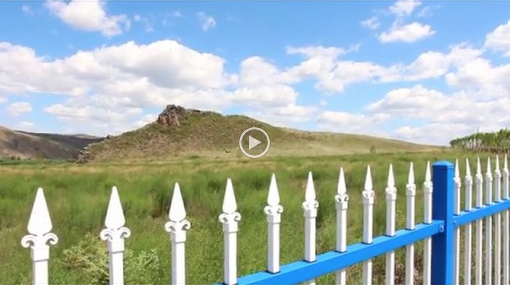

This summer, I went to Inner Mongolia autonomous region in China. My trip started at Arxan, a famous tourist area renowned for its unique natural scenery with a spectacular volcanic landscape.
My first spot in Arxan was "Wuliquan". Located at the Southern part of Daxing'anling Prefecture, "Wuliquan" is a mineral spring surrounded by wetlands. There is a saying in Arxan that the mineral water in Wuliquan is a blessing from the god. Therefore, every year, tons of visitors, even the locals, would climb over the mountains just to taste and touch the “holy water”. Unlike many other similar attractions, “Wuliquan” allows visitors to take away the drinkable mineral waters. If you have a water bottle with you during your visit, you could get some holy water back home!
Right in front of the mouth of “Wuliquan”, a monument stands sturdily. On top of it, there are four Chinese characters “Tian xia qi quan”, manifesting the magical nature of the spring.
Moving around Arxan, Arxan Port Bridge is one of the must-go places. Over the bridge, you can see the lands of Mongolia, the only landlocked country in East Asia.
The Sino-Mongolian cross-border tourism based on the Arxan-Songbeir Port was set up on September 2014. The launch of the tourism development there was regarded as a celebration of diplomatic relation establishment between China and Mongolia.
Visitors love to take pictures under the gateway of China in the Arxan Port. The enormous gate showcasing the words “People's Republic of China” in sharp red colour. With a national emblem on top, the gate looks preeminent in the vast expanse of grasslands.